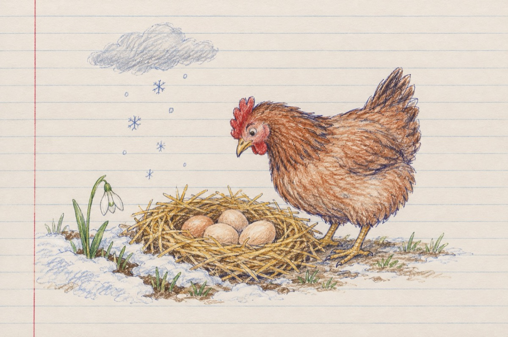

Dimineți de martie
Privesc în susul plumburiu
De este iarnă, primăvară, eu nu știu
Avem și ghiocei dar și zăpadă,
Atât că soarele nu e capabil să le vadă!...
El stă comod acolo sus
După perdeaua deasă de nori, ascuns
Și-așteaptă ca vreun vânt
În plin deznodământ
Din Mediterana
Să ne-alunge de pe-aicea iarna!
Pe ici pe colo ninge totuși și îngheață
În alte părți ploaia nu ne mai lasă
De dimineața umbrela ta ți-o iei
Și vii acasă peste-un timp, cu tălpile-n polei!
În loc să vină Paștele, vine Crăciunul
Și asta fiindcă timpul o face pe nebunul
Până și cloșca de pe ouă
Și-a împărțit gândul în două
Așteaptă timpul potrivit
Ca să se-apuce de clocit
Că este încă frig afară
Și puii de-o să iasă-i fac morală
Vasile Groza